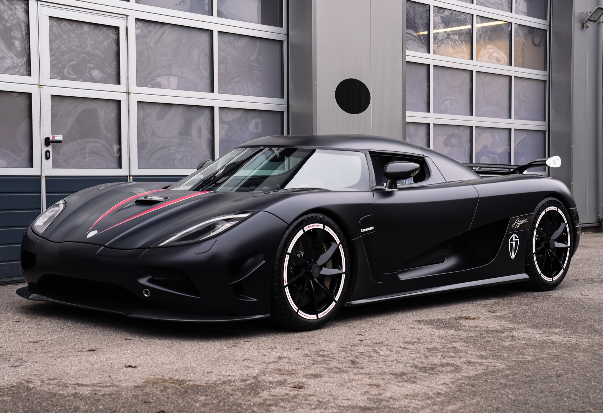

koenigsegg agera

O Koenigsegg Agera é um carro esportivo de motor central da fabricante sueca Koenigsegg. É conhecido por sua velocidade e desempenho excepcionais, com a versão RS tendo atingido 447 km/h em um teste. O nome Agera significa "agir" em sueco, e foi eleito o hipercarro do ano pela revista Top Gear Magazine.